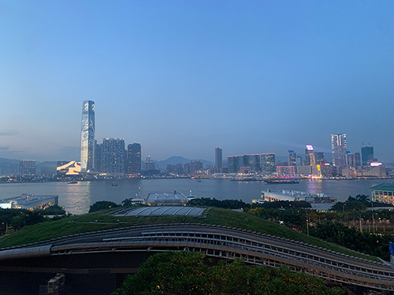

04. Visual Thinking Anaylsis
The drawing created by my classmate, Rashi, depicts a butterfly on a set of falling dominos. It is about how everything you do has an impact on others regardless of how small your actions or words are.Some of the most interesting aspects is the contrast between the butterfly, which is a delicate animal with curved lines and the chaos it can cause, as represented by the movement of the falling dominoes with rigid lines. The contrast and interaction suggests how deeply interconnected our world is.
The most obvious part is the dominos arranging in a falling motion which indicates that the butterfly may have caused it since it is placed right in the middle and is emphasized by the words everything affects everything. The mysterious part to this is the story behind this drawing, whether the butterfly landing was intentional or at the wrong place at the wrong time and why it was created.
To push this imagery and narrative even further, I would suggest shifting perspectives to the butterfly and zooming in on it to emphasize the interaction and adding shadows to highlight its consequence. Blurring certain elements and revealing them later in an overlay may be an interesting way to highlight the mystery of what’s happening to push the narrative of finding the unseen forces pushing our world.
© Rashi Bihani, 2025
This image of a skyline is interesting because the bustling, energetic city is a juxtaposition to the calm waters, and is a key visual representation of Hong Kong. What makes it interesting is that you wouldn’t know that this is the city where I grew up and was raised in, so it has a lot of personal significance to me. My identity and connection is rooted in this place despite always the changes I’ve gone through. This relates back to my topic of travelling because this image can act as a starting point of my travel journey. My archive highlights my experience of exploration and discovery, as well as how these places influence my worldview.
To make the picture more compelling, I could focus on certain elements like transportation or landmarks that make the place special, and add additional information on its background. Another way I could reframe the photo was to highlight the contrast between nature and skyscrapers, showing their co-existence of both in the same place.

© Maya Lai, 2025
03. Visual Thinking Strategies
Design is all centered around visual communication, so as designers we must develop a keen eye and understanding of how images impact people. The New York Times article encourages us to take a careful look at different photos and highlighted the importance of engaging with them. Not only was this helpful but it got me thinking about how I want to present stories visually, asking what messages I want to present.
Each photo has its own compelling story. In particular, I was drawn to the photo of people laying down on the train tracks. It was thought-provoking because it sparked my curiosity and I was questioning the context behind it — whether it was a protest, or cultural ritual or something else. It was a captivating photo that invited a deeper discussion of what was happening. Images can be extremely powerful tools that shapes how we perceive things. This article served as a reminder that images are not just decorations alongside text, but also a way for stories to come alive.
One website I found that did a great job of using imagery to tell a story was called Belanger Salach Architecture. Their websites provide an engaging way for users of their company, as users scroll they follow a red line tracing the outlines of the buildings they worked on over the years. The contrast between grayscale photos and red lines creates a visual effect that evokes a sense of movement and shows their ongoing impacts through history. It has great strengths as it is interactive and has a high visual appeal, but because of its high image quality it may take a long time to load if someone has a bad network.
02. Overuse of Overlays
Overlays are a crucial part of website, but if it is poorly designed it can become a very frustrating feature and disruptive feature. The article, Overuse of Overlays: How to Avoid Misusing Lightboxes resonated with me as I have experienced websites that had overlays that were popping up and taking up a majority of the screen so I was not able see what page I was on before, not only does this create a sense of confusion but also creates a negative impression of that site. The importance of understanding what action the user is supposed to take is emphasized in this article, highlighting how overlays need to have purpose so there is a meaningful interaction and the user does not feel like they wasted their time. Especially if an overlay is view an existing image on screen, it may feel redundant and useless.
As an designer who values the user experience, I feel like this article taught me how to think about how I can be more mindful when creating websites. Going forward if I include overlays in my website, I will evaluate the motivations behind creating it and refer to this article to see how I can make it to be efficient but also user friendly.
01. Best Practices For Form Design
The process of having to fill in a form can be a tedious process but the reading on best practices for form design offered many valuable tips on how different design choices can improve the overall user experience. By implementing some of the ideas in the reading, we can reduce the cognitive load and encourage the user to complete the form instead of abandoning it. As a designer, this article will be helpful going forward when designing our mad libs and building future projects in determining what is best for the user.
One of the ideas that heavily resonated with me was creating multiple steps as I am able to see how much I have completed makes the process less overwhelming and burdened. As a user I tend to be motivated when larger tasks are split into smaller chunks as they seem more manageable. It emphasizes keeping things minimal and simple. This can reduce a lot of the frustrations that many users including me experience. Prioritizing simplicity, progress tracking and responsive design can turn what feels like a chore into a more rewarding experience.
A good example of form design is wix’s website creation. They ask users to fill in a form on the website they want to create, this is achieved through simple labels, step by step questions that don’t overwhelm the user and immediate feedback.